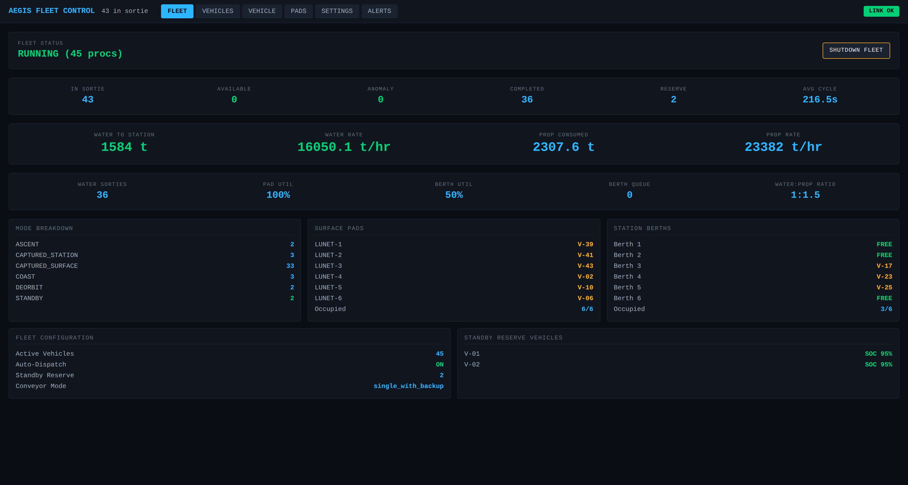
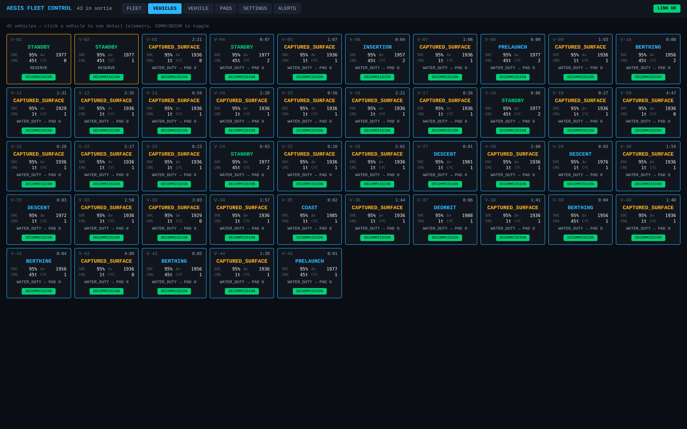
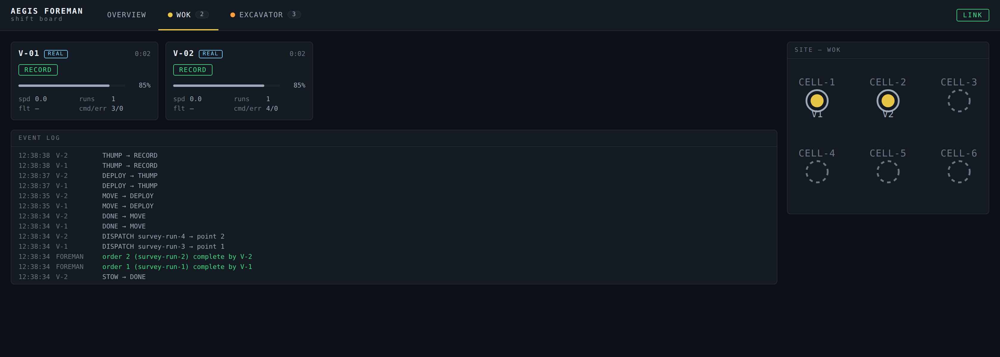
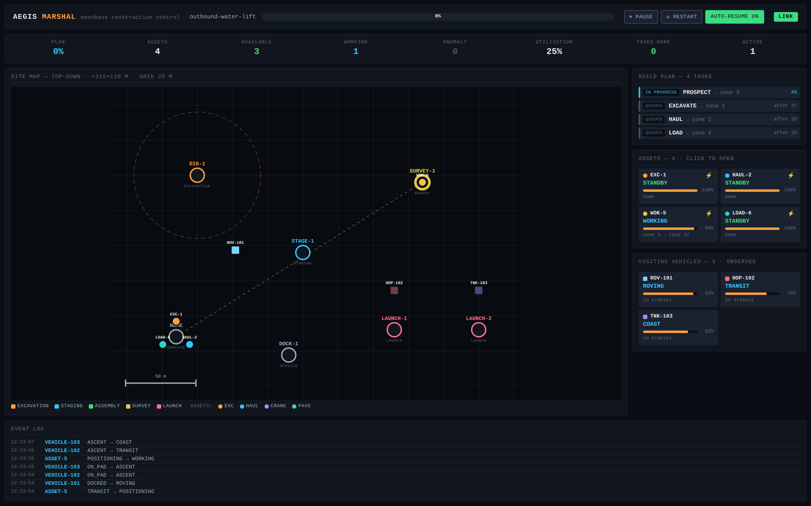
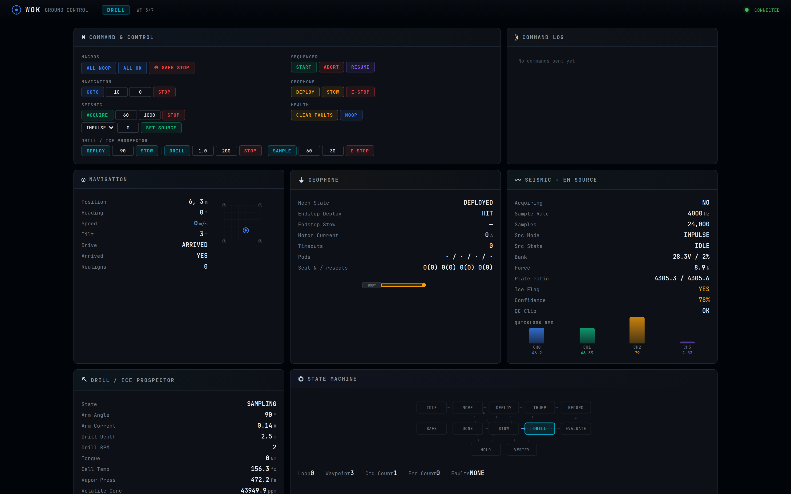

Ground-side coordination software for autonomous fleets sharing a lunar work site: a fleet coordinator proven against 45 live flight-software instances, a like-fleet tier that runs dissimilar vehicle classes behind one contract, a site marshal that sequences heterogeneous assets through a build plan, and the adapter boundary that the mixed-asset case rests on. Everything on this page runs today; every number comes from an instrumented run.
Surface operations concentrate: power, comms, extraction targets, and prepared ground pull every operator's assets into the same few square kilometers. Within that footprint, excavators, haulers, prospecting rovers, and ascent vehicles from different builders share pads, routes, and work zones with no common tasking authority — each fleet arrives speaking its own command dialect, and nothing above the individual vehicle owns the question of who works where, in what order. The failure mode is not a collision algorithm problem; it is the absence of any layer where deconfliction could run.
The fleet coordinator dispatches a fleet of 45 identical LOX/CH4 tanker
vehicles between six surface pads and six orbital berths. Each vehicle is a live cFS
flight-software instance plus a physics simulator — two OS processes per vehicle,
90 at full fleet — commanded over a CCSDS/UDP vocabulary of five verbs
(DISPATCH, RESUME, RELEASE,
SWAP_COMPLETE, SET_MODE). The coordinator scores every
dispatch on state of charge, idle time, pad proximity, and wear; keeps two vehicles in
standby reserve; treats pads as FIFO conveyors so no two vehicles ever occupy one; and
when a vehicle goes SAFE, queues an identical replacement sortie and auto-resumes the
casualty after a cooldown.
It is deliberately the easy case — one vehicle design, one wire format, one duty — and it is the operational ancestor of everything below: the scored-dispatch, telemetry-gated, anomaly-requeue pattern was proven here before being generalized. A full-fleet session on one host runs all 45 flight-software instances against the coordinator with pad queues, berth queues, and throughput accounting live.


Before a site has one of everything, it has fleets of the same thing. The Foreman runs a gang of N identical vehicles on one duty cycle and keeps them saturated: it generates one work order per dispatchable vehicle, ranks idle candidates by energy and idle-time fairness, and dispatches to FIFO service points. Completion is telemetry-gated — an order counts only after the coordinator has observed the vehicle actually enter its working states, so a lost command can never be booked as finished work. Anomalies requeue the order at the front of the line and auto-resume the vehicle once its comms are healthy.
A vehicle class plugs in as a five-part contract — backend, mode vocabulary, service-point layout, duty-cycle verbs, dispatch scoring — and the Foreman loop never sees anything class-specific beyond it. Two classes exist today: a simulated excavator, and a WOK survey rover class whose backend spawns real cFS flight-software instances, N per host via per-instance port offsets, and whose duty cycle is the rover's own onboard autonomous survey mission.

The Marshal is the site tier: it drives a dependency-ordered plan of construction tasks (excavate → haul → pave → place → deploy) across whatever mix of asset classes the tasks require — six classes today, from excavators to a prospecting rover. Tasks become dispatchable when their dependencies complete; the dispatcher selects the best available asset of the required class by energy, idle time, zone proximity, and wear; and work zones carry exclusion radii and explicit mutual-exclusion rules, so a dispatch into a zone that conflicts with occupied ground is refused. There are no acknowledgement packets anywhere: the asset's next telemetry is the ack, and off-sequence mode transitions are flagged as anomalies that requeue the task with its plan edges intact.
The commanded tier runs against simulated assets today — the honest status is in the maturity table. Alongside it, the Marshal already manages real flight software in an observe-only role: it spawns and tracks live cFS instances of a rover, a tanker, and a WOK survey vehicle, decoding their native telemetry into the same normalized state the simulated assets report.

Homogeneous fleet coordination is the easy case because three hard problems collapse: one wire format, one mode vocabulary, one failure model. The tanker coordinator above could hard-code all three and still be correct. A shared site cannot — the assets worth coordinating are precisely the ones you didn't build, and waiting for the industry to converge on a common vehicle bus is not a plan.
The Marshal's answer is a deliberately narrow seam: the AssetAdapter
contract. The coordination core speaks exactly two normalized types — a
WorkOrder going out (work type, destination zone, zone mask) and a
NormalizedTlm snapshot coming back (mode, energy, health flags, plus an
opaque class-specific detail bag that only the console interprets) — and an
adapter is eight methods: register, poll, and six outbound commands
(dispatch, resume, release,
swap_complete, set_mode, abort — abort
advisory, because the asset's onboard e-stop is authoritative). The core never sees
CCSDS, a ROS topic, or any vendor wire format. Alongside the adapter, each asset
registers a capability record declaring what it actually surrenders —
DISPATCH (takes tasking), COORDINATE (accepts constraints),
or OBSERVE (shares telemetry only) — so a foreign asset can join the
picture at whatever level of trust its operator will grant, and the site still gains a
common operating picture from day one.
Status, plainly: the sim adapter is the proven implementation — every Marshal behavior above runs through it. A CCSDS adapter implementing the same eight methods exists and is verified at the byte level against the dispatch vocabulary, but no real construction-apparatus flight software exists yet to put behind it; the live-cFS path demonstrated today (rover, tanker, WOK) runs at the OBSERVE tier. Zone-exclusion blocking is enforced on every dispatch and proven in the test suite, but the current demo scenarios are linear chains that never trigger it — so no deconfliction event counts appear on this page.
The coordination claims above are only as strong as what is being coordinated. The vehicles behind the REAL tags are not simulation stubs: the WOK survey rover, for example, is a six-app cFS flight-software stack — sequencer, navigation, geophone mechanism, seismic acquisition with a dual-mode EM source, drill, and health/FDIR — that flies a full autonomous prospecting mission against a simulated-physics hardware abstraction layer, with its own ground segment. The coordinators command it exactly the way any external tasking authority would: CCSDS commands in, telemetry out, no backdoors into the vehicle.

| Component | Current state | Next milestone |
|---|---|---|
| Fleet Coordinator | Working prototype. 45 live cFS vehicle stacks coordinated on one host: scored dispatch, pad/berth FIFO deconfliction, standby reserve, anomaly requeue and auto-resume, throughput accounting. | Surface-to-surface repositioning between pads — the duty type exists in the vocabulary but no routing logic is built. |
| Foreman | Working prototype. Multi-fleet shift board; WOK class runs real cFS instances end-to-end (dispatch → onboard mission → telemetry-gated completion → re-dispatch); excavator class is sim-only. | A second vehicle class with real flight software behind it. |
| Marshal | Software prototype. Build-plan DAG, zone exclusion, scored dispatch, and anomaly requeue all run — against simulated assets. Real vehicles (rover, tanker, WOK) managed at the OBSERVE tier only. | First live vehicle taking DISPATCH-tier tasking over CCSDS. |
| AssetAdapter / CCSDS adapter | Contract implemented and proven via the sim adapter; CCSDS implementation byte-level verified. No real apparatus flight software exists to command with it. | Construction-apparatus FSW; retire the "working hypothesis" telemetry layout against real packets. |
| WOK survey rover FSW | Verified end-to-end in simulation: full autonomous survey missions, onboard picks within spec of the sim's ground truth, regression-gated releases. Flight HAL is stubbed. | Hardware port of the HAL; bench calibration of the coupling and source models. |
"Working prototype" here means: runs today, on this stack, producing the numbers and screenshots on this page — not that it has flown, and not that it has been demonstrated on hardware.
{kind=link}
{kind=link}
{kind=link}
{kind=link}
{kind=link}